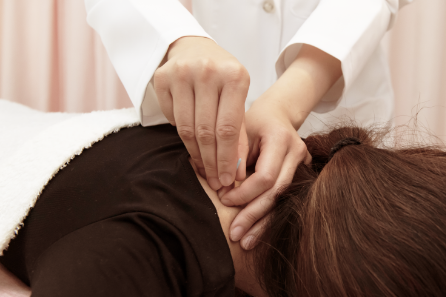
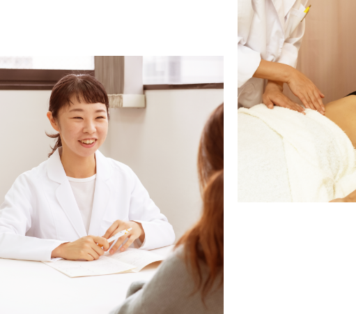
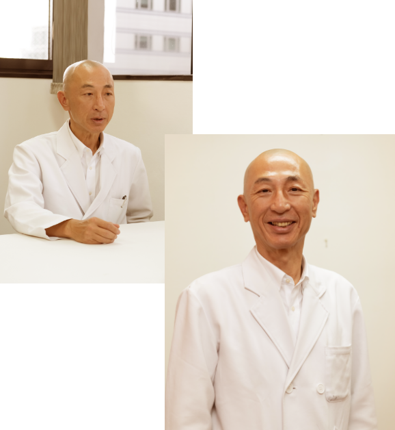

<!DOCTYPE html>
<html lang="ja">
  <head>
    <meta charset="utf-8">
    <meta http-equiv="X-UA-Compatible" content="IE=edge,chrome=1">
    <meta name="viewport" content="width=device-width, ,initial-scale=1">
    <meta name="description" content="">
    <meta name="keywords" content="">
    <meta name="author" content="">
    <title>一の会 鍼灸院(旧いおり鍼灸院）｜大阪・西中島の東洋医学専門治療院</title>
    <link rel="stylesheet" href="css/style.css">
    <link href="https://maxcdn.bootstrapcdn.com/font-awesome/4.7.0/css/font-awesome.min.css" rel="stylesheet">
    <script src="js/jquery-3.2.1.min.js"></script>
  </head>
  <body>
    <header id="header">
      <div class="header-wrap">
        <div class="logobox"><a href="index.html"></a></div>
        <div class="navbox">
          <nav class="gnav">
            <ul class="navitem">
              <li class="item"><a href="index.html"></a></li>
              <li class="item"><a href="about.html">一の会鍼灸院について</a></li>
              <li class="item"><a href="beginner.html">初めての方へ</a></li>
              <li class="item"><a href="price.html">施術内容・料金</a></li>
              <li class="item"><a href="access.html">診療時間・交通アクセス</a></li>
              <li class="item"><a href="staff.html">スタッフ紹介</a></li>
              <li class="item"><a href="column.html">コラム</a></li>
            </ul>
          </nav>
          <div class="cv">
            <p class="tel">tel.<a href="tel:0663071122">06-6307-1122</a></p>
            <p class="mainbtn"><a href="contact.html">予約・相談・お問い合わせへ</a></p>
          </div>
        </div>
        <div id="menuicon">
          <span></span>
          <span></span>
          <span></span>
        </div>
      </div>
    </header>

    <main id="main" class="lower">
      <nav class="breadcrumbs">
        <ul class="navitem">
          <li class="item"><a href="index.html">トップ</a></li>
          <li class="item">一の会鍼灸院について</li>
        </ul>
      </nav>

      <section class="aboutmain-wrap">
        <h1 class="arrowtitle">一の会鍼灸院について</h1>
        <div class="contents">
          <h2 class="verticaltitle">
            <span>心身両面、東洋医学的に</span>
            <span>あらゆる手段を講じて</span>
            <span>治癒へといざないます。</span>
          </h2>
          <div class="readbox">
            <p class="read">一の会鍼灸院の鍼術は、中国古典医学に立脚しながらも日本人の体質に合うように日本独自に発展した古流派思想（漢方医学・鍼灸医学）に基づいた治療を行っています。</p>
            <p class="read">大自然は、ただひとつの太陽が昇り沈みするに従って、万物は様々な在り様に変化します。言い換えると、ひとつの働きが森羅万象を生じます。<br>東洋思想においては、小自然である人間もまた同じ原理で、ひとつの気（生命）が様々な変化を生み出し、人それぞれの心身の在り様、病をも表現すると考えます。（気一元思想）</p>
            <p class="read">東洋医学では、病の種類がどれだけたくさんあっても、その原因は「気のうっ滞（停滞・偏り・アンバランス）」という一点に集約して病をとらえ、解決へと導きます。さらに東洋医学では、心身ともに「気のうっ滞」が無ければ、人は無病・健康に生きることができる、と説いています。<br>この気の流れを阻むものを「邪気」「病毒」と認識し、『気を動かす道具』である鍼と灸を用いて「邪気」「病毒」を除き、正常な気（生命エネルギー）の流れを回復することによって症状や病を治します。</p>
            <p class="read">当院では、病の真の原因・病理機序を的確にとらえるために時間を費やしてお聞きし、さらに全身くまなく触れ、心身両面、東洋医学的にあらゆる手段を講じて治癒へといざないます。</p>
          </div>
          <div class="image"></div>
        </div>
      </section>

      <section class="aboutinitiatives-wrap">
        <h1 class="arrowtitle">一の会鍼灸院の取り組み</h1>
        <div class="maincontents">
          <div class="readbox">
            <h2 class="title">一日でも早く健康を回復していただけるよう、<br>再発しないことを念頭に置いた治療を行っています。</h2>
            <p class="read">康―病気に対する正しい認識と医療消費者にならない智恵が必要です。現代医療は高度に発展を続け、その恩恵をたくさんの人に与えて来ました。<br>しかしその一方で国民医療費は増加の一途をたどり、医療保険制度は破綻寸前に陥り、それを維持するのに大変重い税負担が課せられつつあります。</p>
            <p class="read">病気の「早期発見・早期治療」と謳われていますが、病人は減るどころか、むしろどんどん増加していると言わざるを得ません。</p>
            <p class="read">しかも、一旦病気と診断されると完治しない病気が次第に増加しています。<br>完治しないとは、症状を抑えるだけの対症療法に頼るしかないということです。表現を変えれば、薬物などを使用し続けなくてはならないということです。</p>
          </div>
          <div class="image"></div>
        </div>
        <div class="readwrap">
          <div class="readbox">
            <p class="read">このように対症療法を受け続けなければならなくなってしまった状態を、我々は医療消費者への転落と名づけています。なぜなら、国民医療費はGDP算出項目に入っており、国民医療費が増大すればするほどGDPも上がるという仕組みになっているからです。</p>
            <p class="read">近代経済は、消費の拡大膨張によって経済成長を維持する構造になっています。<br>つまり、いかに需要を引き出し、いかに消費を大きく拡大していくかという力が常に働いていると言うことです。</p>
            <p class="read">したがって、医療消費を抑制しようとする働きよりも拡大への力が大きく働いてしまうのは、現代社会の経済システムの当然の帰結であると言えます。そのため、病人が増えれば増えるほど、経済成長に一役かってしまうという、奇妙なことになっているのです。</p>
            <p class="read">しかし今後、医療の世界に経済原理が深く浸透するに伴って、経済的に余裕のない人は医療が受けられなくなるでしょう。</p>
            <p class="read">「自己責任」という言葉が、ますます重くのしかかってくることは目に見えています。</p>
          </div>
        </div>
        
        <div class="ownervoice-contents">
          <div class="readbox">
            <h2 class="title">「生き生きと健康に、より良く生きる」ことは<br>難しいことではありません。</h2>
            <p class="read">マスコミで「○○が健康に良い」と報道されれば、その商品が店頭から消えてなくなるなどという現象は、健康を｢モノ｣に頼っている社会性を如実に現しています。</p>
            <p class="read">あふれる情報に惑わされることなくご自身の健康を維持するためには、健康―病気に対してのきちんとした認識が必要です。時に医療にかかることはあっても、医療消費者にはならない智恵が必要です。</p>
            <p class="read">当院では、病気で通院してくださっている方々に一日でも早く健康を回復していただけるよう、そして再発しないことを念頭に置いた治療を行っています。<br>また、東洋医学の人体観を基礎に持った、「気」を扱う技術を有する医療人の育成も行っています。</p>
            <p class="read">東洋医学には、医薬に頼らなくても健康に生きる智恵がたくさんあります。<br>伝統医学は、歴史的にあらゆる疾患に対して実績のある、懐が広くて深い医学です。<br>なかなか人に分かってもらえないつらい症状をお持ちの方、難病と診断されて出口の見いだせない方、ぜひ当院の扉を開いてみてください。</p>
            <p class="ceoread">一の会鍼灸院　院長 金澤秀光</p>
          </div>
          <div class="image"></div>
        </div>
      </section>

      <section class="outline-wrap">
        <div class="contents">
          <h1 class="arrowtitle">当院の概要</h1>
          <dl class="outlineitem">
            <dt class="title">会社名</dt>
            <dd class="detail">一の会鍼灸院</dd>
          </dl>
          <dl class="outlineitem">
            <dt class="title">代表</dt>
            <dd class="detail">金澤 秀光</dd>
          </dl>
          <dl class="outlineitem">
            <dt class="title">設立</dt>
            <dd class="detail">
              <dl class="nestflexitem">
                <dt class="title">鍼灸院</dt>
                <dd class="detail">平成元年（1989年）3月23日</dd>
              </dl>
              <dl class="nestflexitem">
                <dt class="title">鍼道 一の会</dt>
                <dd class="detail">平成26年（2014年）年4月</dd>
              </dl>
            </dd>
          </dl>
          <dl class="outlineitem">
            <dt class="title">事業内容</dt>
            <dd class="detail">鍼灸治療院 および 伝統医学専門家 育成事業「鍼道 一の会」併設</dd>
          </dl>
          <dl class="outlineitem">
            <dt class="title">電話/FAX</dt>
            <dd class="detail">TEL: 06-6307-1122</dd>
          </dl>
          <dl class="outlineitem">
            <dt class="title">所在地</dt>
            <dd class="detail">〒532-0011<br>大阪市淀川区西中島４－４－１６<br>NLC新大阪６号館 ６階６０２号室 「一の会 鍼灸院」
            </dd>
          </dl>
          <dl class="outlineitem">
            <dt class="title">診療時間</dt>
            <dd class="detail">
              <dl class="nestflexitem">
                <dt class="title">月・火</dt>
                <dd class="detail">午後3時～6時30分</dd>
              </dl>
              <dl class="nestflexitem">
                <dt class="title">水・木・土</dt>
                <dd class="detail">午前10時～12時　午後2時～4時</dd>
              </dl>
              <dl class="nestflexitem">
                <dt class="title">金</dt>
                <dd class="detail">午前10時～12時　午後3時～6時30分</dd>
              </dl>
            </dd>
          </dl>
          <dl class="outlineitem">
            <dt class="title">メール</dt>
            <dd class="detail"><a href="mailto:mail@ichinokai.info">mail@ichinokai.info</a></dd>
          </dl>
          <dl class="outlineitem">
            <dt class="title">地図</dt>
            <dd class="detail">
              <dl class="map">
                <dt class="title">大阪市淀川区西中島４－４－１６<br>NLC新大阪６号館 ６階６０２号室 「一の会 鍼灸院」</dt>
                <dd class="detail">
                  <iframe src="https://www.google.com/maps/embed?pb=!1m14!1m8!1m3!1d13116.442471474746!2d135.496026!3d34.727606!3m2!1i1024!2i768!4f13.1!3m3!1m2!1s0x0%3A0x497ab94e044caf97!2z5LiA44Gu5Lya44O76Y2854G46Zmi!5e0!3m2!1sja!2sjp!4v1605110842744!5m2!1sja!2sjp" width="600" height="450" frameborder="0" style="border:0;" allowfullscreen="" aria-hidden="false" tabindex="0"></iframe>
                </dd>
              </dl>
            </dd>
          </dl>
          <dl class="outlineitem">
            <dt class="title">取得資格</dt>
            <dd class="detail">
              <dl class="qualification">
                <dt class="title">はり師　きゅう師</dt>
                <dd class="detail">
                  院長を除くスタッフ全員：鍼灸教育機関教員免許<br>
                  ※医療系学生であっても、無資格者の治療もしくは<br>補助治療は一切行っておりません。
                </dd>
              </dl>
            </dd>
          </dl>
        </div>
        <div class="contents">
          <h1 class="arrowtitle">沿革</h1>
          <dl class="outlineitem">
            <dt class="title">1989年</dt>
            <dd class="detail">兵庫県・福崎にて「心身総合治療所　逢祥庵」を開院。</dd>
          </dl>
          <dl class="outlineitem">
            <dt class="title">2005年</dt>
            <dd class="detail">遠方から来院される方が増加し、新大阪のマンションの一室で分院を開設。本院治療と並行して週末のみ診療を開始。</dd>
          </dl>
          <dl class="outlineitem">
            <dt class="title">2006年7月</dt>
            <dd class="detail">「心身総合治療所　逢祥庵」を閉院。</dd>
          </dl>
          <dl class="outlineitem">
            <dt class="title">2006年10月</dt>
            <dd class="detail">「いおり鍼灸院」と改名し、大阪市淀川区・木川東2丁目で開院。</dd>
          </dl>
          <dl class="outlineitem">
            <dt class="title">2007年1月</dt>
            <dd class="detail">通院患者様を対象に「いおり健康教室」を開始。</dd>
          </dl>
          <dl class="outlineitem">
            <dt class="title">2007年4月</dt>
            <dd class="detail">一般の方から東洋医学の専門家として初学の方を対象とした「いおり東洋医学教室」を開始。</dd>
          </dl>
          <dl class="outlineitem">
            <dt class="title">2010年9月</dt>
            <dd class="detail">駅に近く、患者様がより通院しやすい環境を求めて現在の大阪市淀川区・西中島南方（西中島4丁目）に移転。</dd>
          </dl>
          <dl class="outlineitem">
            <dt class="title">2014年4月</dt>
            <dd class="detail">『一の会』を立ち上げ、一般の方を対象とした「一の会・養生講座」および東洋医学(鍼灸)の専門家を目指す方を対象とした「一の会・東洋医学講座」を開始。（後に『一の会』は『鍼道 一の会』と改称）</dd>
          </dl>
          <dl class="outlineitem">
            <dt class="title">2019年6月</dt>
            <dd class="detail">「一の会 鍼灸院」と名称を改め、旧治療院の近辺に移転し再出発。</dd>
          </dl>
        </div>
      </section>
    </main>

    <footer id="footer">
      <div class="footertop">

        <div class="footertopinner">
          <div class="image"></div>
          <div class="informationbox">
            <p class="logo"></p>
            <p class="read">大阪市淀川区西中島４－４－１６<br>NLC新大阪６号館 ６階６０２号室 「一の会 鍼灸院」<br>一の会鍼灸院　大阪メトロ「西中島南方」駅　1番出口より徒歩4分</p>
            <p class="tel">tel. <a href="tel:0663071122">06-6307-1122</a></p>
            <p class="mainbtn"><a href="contact.html">予約・相談・お問い合わせはこちら</a></p>
            <dl class="information">
              <dt class="title">診療時間</dt>
              <dd class="detail">
                <dl class="nestinformation">
                  <dt class="title">月・火</dt>
                  <dd class="detail">
                    <ul class="calender">
                      <li class="item">午後3時～6時30分</li>
                    </ul>
                  </dd>
                </dl>
                <dl class="nestinformation">
                  <dt class="title">水・木・土</dt>
                  <dd class="detail">
                    <ul class="calender">
                      <li class="item">午前10時～12時</li>
                      <li class="item">午後2時～4時</li>
                    </ul>
                  </dd>
                </dl>
                <dl class="nestinformation">
                  <dt class="title">金</dt>
                  <dd class="detail">
                    <ul class="calender">
                      <li class="item">午前10時～12時</li>
                      <li class="item">午後3時～6時30分</li>
                    </ul>
                  </dd>
                </dl>
              </dd>
            </dl>
            <dl class="information">
              <dt class="title">診療時間</dt>
              <dd class="detail">
                <ul class="closeddays">
                  <li class="item">日曜</li>
                  <li class="item">月曜午前診</li>
                  <li class="item">火曜午前診</li>
                </ul>
              </dd>
            </dl>
          </div>
        </div>

      </div>

      <div class="footernavgation-wrap">
        <div class="footernavigationinner">
          <ul class="navitem">
            <li class="item"><a href="">トップページ</a></li>
            <li class="item"><a href="about.html">一の会鍼灸院について</a></li>
            <li class="item"><a href="beginner.html">初めての方へ</a></li>
            <li class="item"><a href="price.html">施術内容・料金</a></li>
            <li class="item"><a href="access.html">診療時間・交通アクセス</a></li>
            <li class="item"><a href="staff.html">スタッフ紹介</a></li>
          </ul>
          <ul class="navitem">
            <li class="item"><a href="news.html">ニュースプレス</a></li>
            <li class="item">
              <a href="column.html">コラム</a>
              <ul class="columnitem">
                <li class="item"><a href="">いおり日記</a></li>
                <li class="item"><a href="">東洋医学講座のご案内</a></li>
                <li class="item"><a href="">ブログ『鍼道 ⼀の会』</a></li>
                <li class="item"><a href="">鍼灸医学の懐</a></li>
                <li class="item"><a href="">疾患解説集</a></li>
              </ul>
            </li>
          </ul>
          <ul class="navitem">
            <li class="item"><a href="contact.html">お問い合わせ</a></li>
            <li class="item"><a href="privacy.html">プライバシーポリシー</a></li>
            <li class="item"><a href="sitemap.html">サイトマップ</a></li>
          </ul>
        </div>
      </div>
      <p class="copyright">&copy;2020 一の会鍼灸院</p>
    </footer>

    <div id="hamburger">
      <div id="overlay"></div>
      <div id="hamburgerwrap" class="hamburgerwrap">
        <a id="close" href="javascript:void(0)"><span></span><span></span></a>
        <ul class="navlist">
          <li class="list"><a href="">ホーム</a></li>
          <li class="list"><a href="about.html">一の会鍼灸院について</a></li>
          <li class="list"><a href="beginner.html">初めての方へ</a></li>
          <li class="list"><a href="price.html">施術内容・料金</a></li>
          <li class="list"><a href="access.html">診療時間・交通アクセス</a></li>
          <li class="list"><a href="staff.html">スタッフ紹介</a></li>
          <li class="list"><a href="column.html">コラム</a></li>
        </ul>
        <div class="cv">
          <p class="tel">tel.<a href="tel:0663071122">06-6307-1122</a></p>
          <p class="mainbtn"><a href="contact.html">予約・相談・お問い合わせへ</a></p>
        </div>
      </div>
    </div>


    <script src="js/app.js" defer></script>
  </body>
  </html>